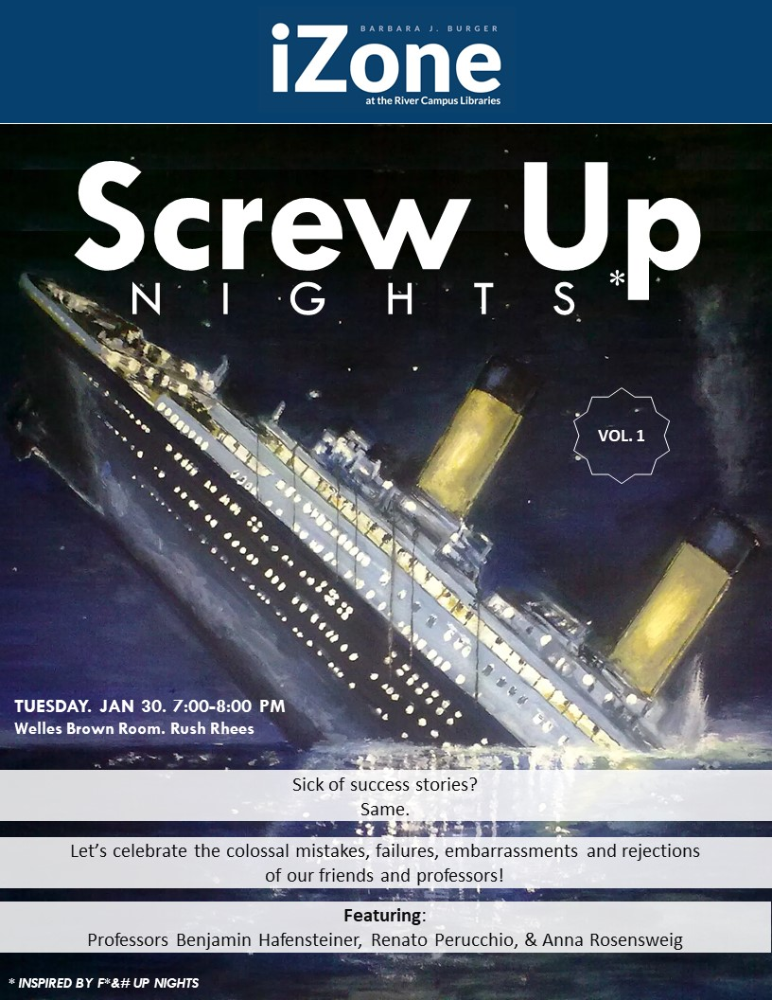
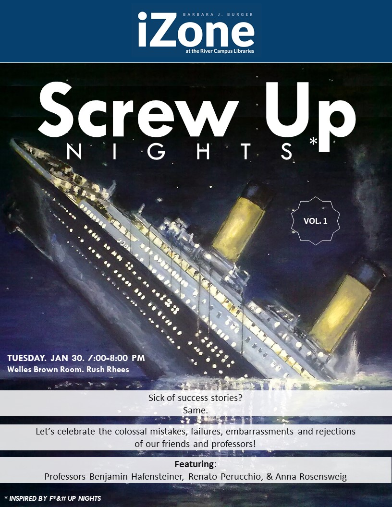

Before
Before I came into iZone marketing materials were created by whoever had the time. They used the University's prescribed navy blue and struggled to stick to a font family, but always using a sans serif. Materials were very text heavy and read like a narrative, relying on the viewer to read the entire poster to understand the message. They occasionally utilized imagery, always sourcing from Google Images.
A huge challenge I had to deal with was figuring out a branding approach without touching the logo made for us by the school, or relying on the name "iZone". Our team didn't like either, but we didn't really have a say in them, so I chose to just avoid them altogether.
 
